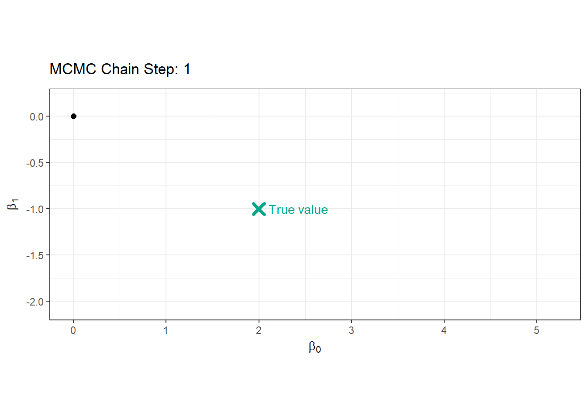
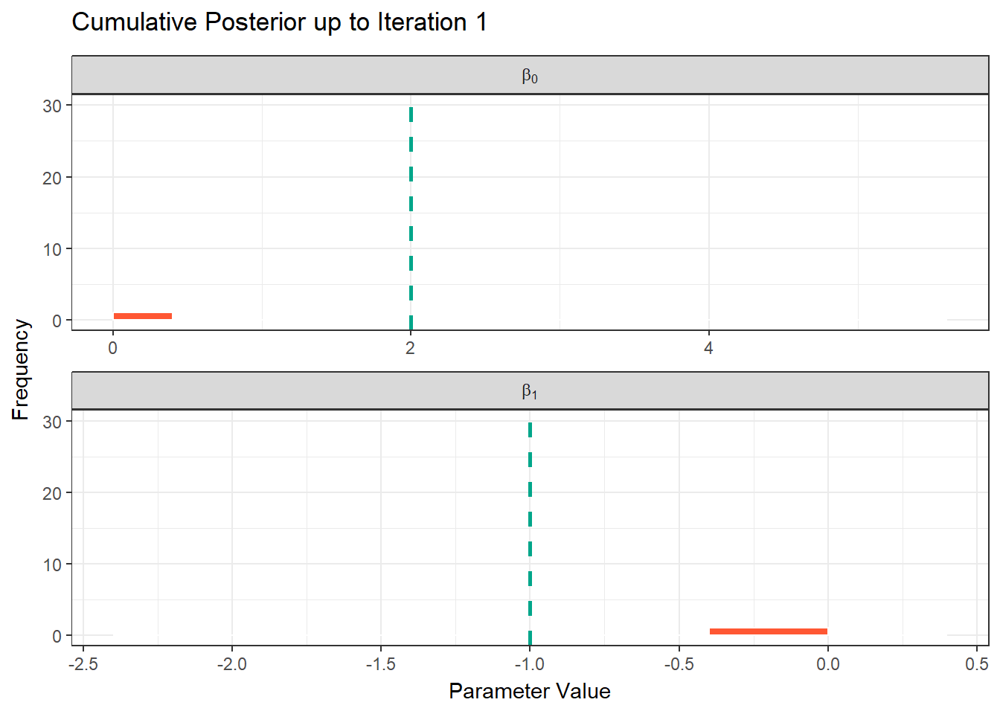
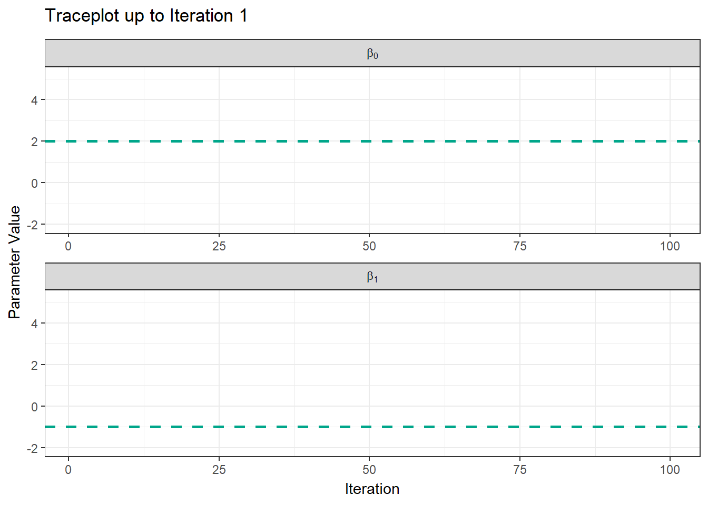

Code
library(spOccupancy)Deon Roos
April 29, 2025
In the previous page, we went through the underlying theory of Bayesian statistics; how our prior knowledge is updated using real data through Bayes’ Theorem. Now, we’re going to move into the practical application of these ideas using the spOccupancy package. My goal here is to help you understand how Bayesian occupancy models are fit, how to monitor convergence, and how to interpret uncertainty through credible intervals.
We’ll again work with the Etosha elephant dataset. Importantly, we are not yet including spatial autocorrelation. We’ll add that in the next section.
In the previous page we spoke about posteriors and how these are a combination of our prior belief and our data. But how does that actually happen? Well, the answer is pretty simple but took hundreds of years for statisticians to figure out. Markov Chain Monte Carlo is an algorithm that was developed by scientists at Los Alamos in the 1950s working on the Manhattan Project (yes that Manhattan Project). The algorithm is called Markov Chain Monte Carlo (or MCMC) for two reasons. A Markov Chain describes a sequence of states, where the probability to move from one state to the next state depends only on what the current state is.
For example, imagine you are walking through a series of rooms. Where you go next depends only on the room you’re currently in. You can’t instantly teleport to the other side of the building! Nor does it depend on the path you have taken to get to your current room.
Below is an animation of a simple MCMC algorithm to help give an intuition for what’s happening behind the scenes.
For this, we have the following simple linear model:
\[y_i \sim Normal(\mu_i, \sigma^2)\]
\[\mu_i = \beta_0 + \beta_1 \times x_i \]
So our objective here is to figure out \(\beta_0\) and \(\beta_1\). To do so, we’ll set up an MCMC using one “chain”. A chain is a Markov Chain - it’s the black dot and orange line you can see in the animation below. This chain is trying to find the “True value” location marked with a teal X. At each step the black dot asks “if I take a step in a random direction, will I be closer to X or further away?”. If it’s closer, then it takes the step. If it’s further away, then it’s less likely to take the step but it’s not impossible. This seems like a bad choice. Why move somewhere if it’s further away from X? The answer is a bit nuanced, but the concise explanation is that sometimes there might be areas of the “parameter space” (the parameter space is all possible values of \(\beta_0\) and \(\beta_1\)) which “work” quite well despite not being the true value. If we didn’t have the behaviour, where the chain might take a step even though it’s worse, then we might get stuck in one of these “bad” areas (technically, these “bad” areas are called “local minima”).
Here’s our MCMC in action:
library(tidyverse)
library(gganimate)
library(ggthemes)
true_param <- c(2, -1)
target_density <- function(x, y) {
exp(-0.5 * ((x - true_param[1])^2 / 1^2 + (y - true_param[2])^2 / 0.5^2))
}
set.seed(123)
n_iter <- 100
x <- y <- 0
samples <- tibble(x = x, y = y, iteration = 1)
for (i in 2:n_iter) {
x_prop <- rnorm(1, x, 0.4)
y_prop <- rnorm(1, y, 0.4)
accept_ratio <- target_density(x_prop, y_prop) / target_density(x, y)
if (runif(1) < accept_ratio) {
x <- x_prop
y <- y_prop
}
samples <- samples |> add_row(x = x, y = y, iteration = i)
}
ggplot(samples, aes(x = x, y = y)) +
geom_path(color = "#FF5733", linewidth = 0.7) +
geom_point(aes(x = x, y = y), color = "black", size = 2) +
geom_point(aes(x = true_param[1], y = true_param[2]),
color = "#00A68A", size = 3, shape = 4, stroke = 2) +
annotate("text", x = true_param[1] + 0.1, y = true_param[2],
label = "True value", color = "#00A68A", hjust = 0) +
transition_reveal(iteration) +
coord_fixed() +
labs(
title = "MCMC Chain Step: {frame_along}",
x = bquote(beta[0]),
y = bquote(beta[1])
) +
theme_bw()
Here’s where the really clever bit comes in. At each iteration, if we record the parameter value it tried, and store it, when we build it up the end result is our posterior! This is what made Bayesian statistics possible! We don’t need to use any crazy (and often impossible) maths to figure out the posterior, we just have MCMC walk around and the end result is an insanely good reflection of the posterior!
library(tidyverse)
samples_long <- samples |>
pivot_longer(cols = c(x, y), names_to = "parameter", values_to = "value")
samples_long <- samples_long |>
mutate(true_value = if_else(parameter == "x", true_param[1], true_param[2]))
samples_long_cumulative <- samples_long |>
group_by(parameter) |>
group_split() |>
map_dfr(function(df) {
param <- unique(df$parameter)
map_dfr(1:max(df$iteration), function(i) {
df |>
filter(iteration <= i) |>
mutate(frame = i, parameter = param)
})
})
samples_long_cumulative <- samples_long_cumulative %>%
mutate(parameter_label = case_when(
parameter == "x" ~ "beta[0]",
parameter == "y" ~ "beta[1]"
))
ggplot(samples_long_cumulative, aes(x = value)) +
geom_histogram(binwidth = 0.4, fill = "#FF5733", color = "white", boundary = 0) +
geom_vline(aes(xintercept = true_value), linetype = "dashed", color = "#00A68A", linewidth = 1) +
facet_wrap(~parameter_label, scales = "free_x", ncol = 1, labeller = label_parsed) +
transition_manual(frame) +
labs(title = "Cumulative Posterior up to Iteration {current_frame}",
x = "Parameter Value", y = "Frequency") +
theme_bw()
Another way to show what the MCMC was up to is using something called “traceplots”. These are relatively simple but actually quite powerful for determining if we trust the model output. We’ll come back to this in a bit, but for now, we can show the MCMC exploring the parameter space using these traceplots.
samples_long_cumulative_trace <- samples_long |>
group_by(parameter) |>
group_split() |>
map_dfr(function(df) {
param <- unique(df$parameter)
map_dfr(1:max(df$iteration), function(i) {
df |>
filter(iteration <= i) |>
mutate(frame = i, parameter = param)
})
})
samples_long_cumulative_trace <- samples_long_cumulative_trace %>%
mutate(parameter_label = case_when(
parameter == "x" ~ "beta[0]",
parameter == "y" ~ "beta[1]"
))
ggplot(samples_long_cumulative_trace, aes(x = iteration, y = value)) +
geom_line(color = "#FF5733", linewidth = 0.8) +
geom_hline(aes(yintercept = true_value), linetype = "dashed", color = "#00A68A", linewidth = 1) +
facet_wrap(~parameter_label, scales = "free_x", ncol = 1, labeller = label_parsed) +
transition_manual(frame) +
labs(title = "Traceplot up to Iteration {current_frame}",
x = "Iteration", y = "Parameter Value") +
theme_bw()